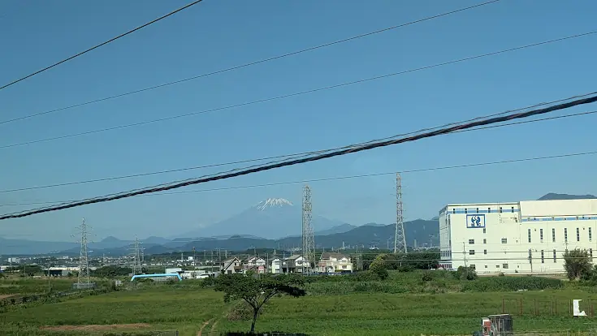

TOKAIDO SHINKANSEN WINDOW VIEW
Mt. Fuji beyond the Sagami Plain, rising behind the Tanzawa range
Mt. Fuji rising behind the Tanzawa.

- Section
- Shin-Yokohama → Odawara
- Seat side
- Seat E · mountain side
- Timing
- About 25 minutes after leaving Tokyo on a Nozomi train
- Photos
- 3 photos
What is the Sagami Plain Fuji view?
The Sagami Plain is a broad alluvial plain formed by the Sagami River and its tributaries in central Kanagawa Prefecture, bordered by the Yokohama area to the east, the Tanzawa range to the west, and Sagami Bay to the south. The Tokaido Shinkansen cuts diagonally across it after leaving Shin-Yokohama. On days with clear, dry air, look far off on the Seat E side: the plain opens toward the green ridge of the Tanzawa range, with Mt. Fuji poking out behind as a sharp independent triangle. It often overlaps visually with peaks like Mt. Oyama, Mt. To-no-dake or Mt. Hirugatake, or with the outer rim of the Hakone caldera — a favorite 'wait, there's Fuji too' moment for many riders.
More: Weathernews: Mt. Fuji from the ShinkansenKanagawa Prefecture: Tanzawa-Oyama Quasi-National Park (Japanese only)
If you are traveling from Tokyo toward Shin-Osaka, start watching the Seat E · mountain side window as you approach Shin-Yokohama → Odawara. If you are traveling toward Tokyo, the order is reversed.
Seat side for Mt. Fuji, timing from Tokyo / Kyoto / Osaka, cloudy-day advice, and how this view compares with the other Fuji viewpoints are gathered in the Mt. Fuji FAQ and pre-trip guide.
How the view changes with the season and time
From winter through early spring (December to March), the air is dry and long-visibility days are common. Snow-covered white Fuji against the still-bare Tanzawa slopes stands out sharply. Mornings tend to give the best odds in this season. Summer is often hazy, and even when Fuji is technically visible, it can blend into the pale sky.
Right after the rainy season lifts, or the day after a typhoon, atmospheric moisture is briefly cleared and unexpectedly crisp views are possible. Late in the afternoon, backlight turns the mountain into a silhouette — its outline may be sharp but its texture is lost. The best approach is to keep an eye on the window without expecting too much.
This stretch of window includes the Tomei Expressway, National Route 1, and the green belt along the Sagami River, so you can enjoy the geography of western Kanagawa as a whole, not just Fuji. Pairing this scene with the triangular roofs of Hinataoka and the Odawara / Hakone mountains that follow gives a real sense of how wide the Sagami Plain is.
Location at a glance
Open mapSwitch between the spot and the Shinkansen viewpoint.
How to catch Mt. Fuji over Sagami Plain
1. Choose the window first
As you approach Shin-Yokohama → Odawara, start watching from Seat E · mountain side. Use Live Guide while riding, or the map on this page before you board.
This wider view appears intermittently through the section. Buildings and terrain may block it, so the timing is a guide for when to start looking, not a continuous visibility claim.
2. Highlights
As the train approaches or crosses the Sagami River, look far off on the Seat E side for the green ridge of Tanzawa; then raise your gaze a little higher for the 'sharper, taller white (or blue-gray) peak' behind it. Fuji can be hidden by overlapping Tanzawa ridges, so lifting your eyes slightly helps. Winter mornings offer the best chance.
Mt. Fuji over Sagami Plain in photos


 Related
Hinataoka Hillside Homes
Related
Hinataoka Hillside Homes
 Related
Musashi-Kosugi Towers
Related
Musashi-Kosugi Towers
 Related
Maruko Bridge
Related
Maruko Bridge